使用在线调试器

概述
本教程介绍如何在在线模式下使用调试器。
操作流程
以调试模式启动MindSpore Insight，等待训练连接；
配置相关环境变量，运行训练脚本；
训练连接成功，在MindSpore Insight调试器界面设置监测点；
在MindSpore Insight调试器界面分析训练执行情况。
调试器环境准备
以调试模式启动MindSpore Insight
开始训练前，请先安装MindSpore Insight，并以调试模式启动。调试模式下，MindSpore会将训练信息发送给MindSpore Insight调试服务，用户可在MindSpore Insight调试器界面进行查看和分析。
MindSpore Insight调试服务启动命令：
mindinsight start --port {PORT} --enable-debugger True --debugger-port {DEBUGGER_PORT}
参数含义如下:
参数名 |
属性 |
功能描述 |
参数类型 |
默认值 |
取值范围 |
|---|---|---|---|---|---|
|
可选 |
指定Web可视化服务端口。 |
Integer |
8080 |
1~65535 |
|
可选 |
取值为True或1, 开启MindSpore Insight侧调试器；默认为False，不开启。 |
Boolean |
False |
True/False/1/0 |
|
可选 |
指定调试服务端口。 |
Integer |
50051 |
1~65535 |
更多启动参数请参考MindSpore Insight相关命令。
以调试模式运行训练脚本
以调试模式运行训练脚本，需要设置环境变量export ENABLE_MS_DEBUGGER=1或export ENABLE_MS_DEBUGGER=True，将训练指定为调试模式，并设置训练要连接的调试服务和端口：
export MS_DEBUGGER_HOST=127.0.0.1(该服务地址需与MindSpore Insight host一致)；
export MS_DEBUGGER_PORT=50051(该端口需与MindSpore Insight debugger-port一致)。
如果用户设备的内存空间有限，可在运行训练前开启部分内存复用模式，以降低运行内存占用：export MS_DEBUGGER_PARTIAL_MEM=1。
此外，训练时不要使用数据下沉模式（需设置model.train中的dataset_sink_mode为False），以保证调试器可以获取每个轮次的训练信息。
环境变量和训练脚本准备完成后，运行训练脚本。
调试器页面介绍
训练连接成功后，可以在MindSpore Insight调试器界面查看计算图等训练元信息，调试器页面布局由计算图、节点列表、节点信息、监测点列表、监测点命中列表、堆栈列表、堆栈信息等部分组成。
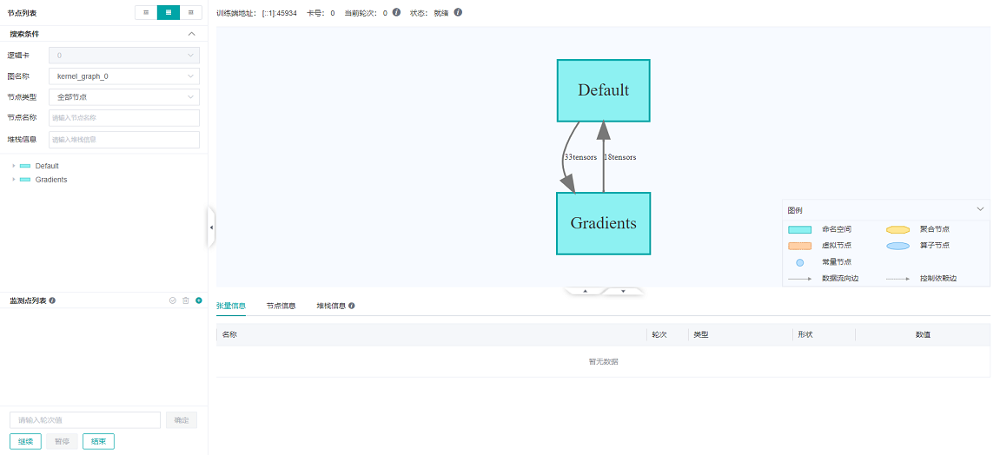
图1：调试器初始页面
计算图
调试器将优化后的最终执行图展示在UI的中上位置，用户可以双击打开图上的方框 (代表一个scope) 将计算图进一步展开，查看scope中的节点信息。
面板的最上方展示了训练端地址（训练脚本所在进程的地址和端口），训练使用的卡号，训练的当前轮次等元信息。
在GPU环境下，训练执行图面板的右上角会有当前节点和下一个节点两个按钮，分别用于回到当前执行节点和执行下一个节点。
用户可以方便地执行单个节点。
当一个命名空间或聚合节点的直接子节点的深度超过70时，计算图页面不支持展开该节点。 要想看到内部的张量关系，可以通过一个与该节点相关的节点跳转到张量关系图页面，详细操作可参考FAQ。
节点列表
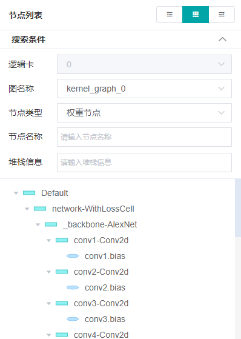
图2：节点列表按节点类型过滤
如图1所示，在UI的左侧会展示计算图节点列表，可以将计算图中的节点按scope分层展开。点击节点列表中的节点，计算图也会联动展开到选中节点的位置。
用户也可以使用节点列表上方的图文件以及节点类型对节点按图文件和类型进行过滤，如图2所示。用户还可以使用节点类型下方的搜索框按名称进行节点的搜索。
节点信息
点击计算图上的节点后，可以在UI下方查看该节点的详细信息，如图2所示。该部分展示了节点的输出和输入，训练的轮次数目，张量的类型、形状和数值等信息。点击数值信息里的下载，可以将该张量数据下载为.npy文件，默认在download文件夹下。
在GPU环境下，选中图上的某个可执行节点后，单击鼠标右键，可选择运行到该节点，代表将训练脚本运行到被选中节点（不超过一个轮次）。
异常现象检查列表
异常现象检查列表展示了设置的所有异常现象检查规则。异常现象检查规则，简称监测点。
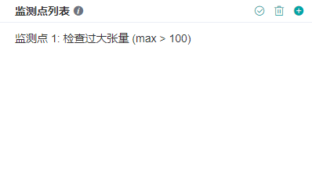
图3：异常现象检查列表
如图3所示，异常现象检查列表位于页面的左下方。监测点列表上方的三个按钮从左到右依次为重新检查、清空监测点和创建监测点。
设置监测点
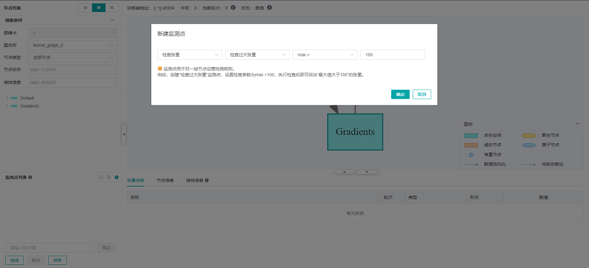
图4：创建监测点
为了方便地对节点的计算结果进行监测分析，用户可以给计算图中的节点设置监测点。图4展示了监测点的设置方法，用户首先点击监测点列表右上角的 + 按钮新增监测点并选择检查条件，比如检查过大张量，选择一个要检查的条件并输入阈值，点击“确定”以创建监测点。
监测点创建后，请手动勾选要检查的节点，最后点击监测点旁边的√确认。如果创建监测点时，选择的检查对象为“检查权重”、“检查梯度”、“检查激活”，则监测点创建时，会自动勾选权重、梯度、激活节点，用户可以在点击“确定”后手动修改节点勾选状态。
支持的条件包括（括号中为缩写）：
检查张量
检查计算过程溢出（OO）：检查算子计算过程中是否存在溢出现象，仅支持昇腾AI处理器。
检查张量是否全为0（TZ）：通过对条件参数设置阈值来检查张量的0值比例，可选参数为
0值比例>=。检查张量溢出（TO）：检查张量值是否存在溢出现象。
检查张量值范围（TR）：通过对条件参数设置阈值来检查张量值的范围，可选参数为
在范围中的值所占百分比>、在范围中的值所占百分比<、MAX-MIN>和MAX-MIN<。其中在设置在范围中的值所占百分比>和在范围中的值所占百分比<时需要同时设置支持参数范围上界（含）和范围下界（含）。检查过大张量（TL）：通过对条件参数设置阈值来检查张量值是否过大，可选参数为
绝对值的平均值>、max >、min >和mean >。检查过小张量（TS）：通过对条件参数设置阈值来检查张量值是否过小，可选参数为
绝对值的平均值<、max <、min <和mean <。
检查权重
检查权重变化过大（WCL）：通过对条件参数设置阈值来检查权重值的变化是否过大，可选参数为
平均变化比例值>。其中
平均变化比例值的计算方式为mean(abs(当前权重值 - 上一轮次权重值)) / (mean(abs(上一轮次权重值)) + 偏移量)。
检查权重变化过小（WCS）：通过对条件参数设置阈值来检查权重值的变化是否过小，可选参数为
平均变化比例值<。检查权重初始值（WI）：通过对条件参数设置阈值来检查权重的初始值，可选参数为
0值比例>=、max >和min <。检查未变化权重（WNC）：通过对条件参数设置阈值来检查权重值是否更新，可选参数为
相对容忍度。检查权重溢出（WO）：检查权重值是否存在溢出现象。
检查过大权重（WL）：通过对条件参数设置阈值来检查权重值是否过大，可选参数为
绝对值的平均值>、max >、min >和mean >。检查过小权重（WS）：通过对条件参数设置阈值来检查权重值是否过小，可选参数为
绝对值的平均值<、max <、min <和mean <。
检查激活值
检查激活值范围（AR）：通过对条件参数设置阈值来检查激活值的范围，可选参数为
在范围中的值所占百分比>、在范围中的值所占百分比<、MAX-MIN>和MAX-MIN<。其中在设置在范围中的值所占百分比>和在范围中的值所占百分比<时需要同时设置支持参数范围上界（含）和范围下界（含）。
检查梯度
检查梯度爆炸（GE）：检查梯度值是否存在溢出现象。
检查梯度过大（GL）：通过对条件参数设置阈值来检查梯度值是否过大，可选参数为
绝对值的平均值>、max >、min >和mean >。检查梯度消失（GV）：通过对条件参数设置阈值来检查梯度值是否过小，可选参数为
绝对值的平均值<、max <、min <和mean <。
检测点生成后用户还可以在节点列表添加或取消要监控的节点（勾选节点前的方框），如图3所示。除此之外，用户可以通过点击清空监测点按钮或者点击监测点旁边的x来删除监测点。
训练时，调试器会对这些监控节点的输出进行实时分析，一旦监控条件触发，训练暂停，用户可在UI上查看触发的监测节点信息。
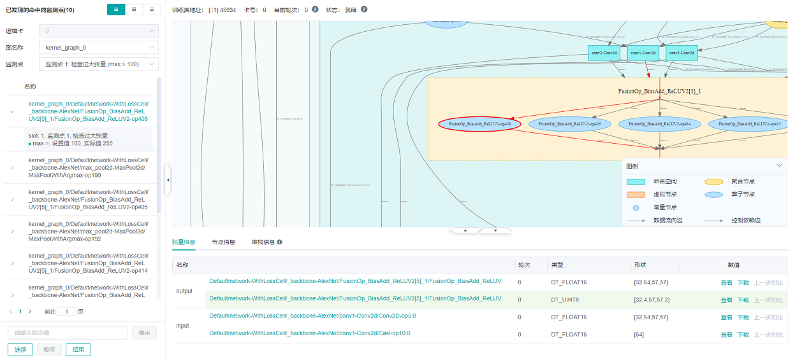
图5：查看触发的监测节点
图5展示了触发了监测点的节点列表，该页面和节点列表所在位置相同。如果设置了多个监测点，可以在监测点的下拉框中选择监测点id号，就会只展示触发了选中监测点的节点列表。
如果是多子图的网络，还可以在图文件的下拉框中选择图名称，就会只展示选中的子图中触发了监测点的节点列表。
如果是多卡训练，还可以选择逻辑卡号来展示对应逻辑卡上触发了监测点的节点列表（目前只支持离线调试，在线调试器暂不支持多卡训练）。
同一张子图上的触发了监测点的节点会按照节点的执行序排列，点击节点名左侧的展开图标，显示该节点触发的监测点和监控条件，监控条件上会显示该条件的设置值以及触发该条件的实际值。
另外，用户点击某一行，会在计算图中跳转到对应节点，可以进一步查看节点信息分析异常结果出现的原因。点击查看进入张量检查视图可以查看触发的监测点信息以及调优向导，如图8所示。
堆栈列表
通过调试器页面左上方的切换按钮，可以从节点列表或命中的监测点切换到堆栈列表。
在调试器的堆栈信息列表页，可以看到所有的堆栈信息列表，搜索框输入关键字，可以显示匹配的堆栈信息列表。列表分页显示。点击底部的页码，可以快速跳转到对应页。
点击列表中的某一项，可以自动跳转到节点列表，在节点列表可以看到与这一行代码相关的节点。
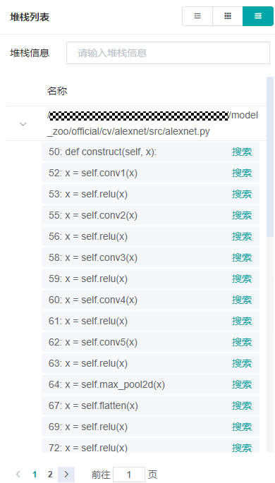
图6：堆栈列表
堆栈信息
在图上定位到某一个节点时，点击计算图下方的堆栈信息标签，会看到该节点对应的堆栈信息。
在堆栈信息标签下，点击某一行的搜索，可以搜索与这一行相关的所有节点，搜索结果会自动展示在节点列表中。
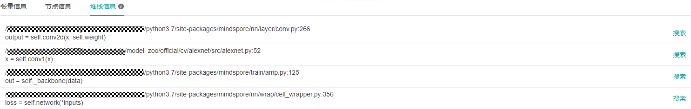
图7：堆栈信息
注意：有部分算子由框架生成，例如TupleGetItem、Depend、UpdateState等，可能关联到框架本身的代码，或者没有代码可以关联，均为正常现象。
重新检查
为了更详细地对节点进行监测分析，用户可以在修改监测点的节点，添加删除监测点后对当前轮次重新检查。重新检查按钮位于监测点列表右上角，如图3所示。
训练控制
监测点设置面板的下方是训练控制面板，该面板展示了调试器的训练控制功能，有继续、暂停、结束和确定四个按钮。
确定代表训练向前执行若干个轮次，需要用户在上方的输入框内指定执行的轮次数目，直到监测点触发、或轮次执行完毕后暂停；继续代表训练一直执行，直到监测点触发后暂停、或运行至训练结束；暂停代表训练暂停；结束代表终止训练。
张量检查视图
一些张量的维度过多，无法直接在主页进行展示。用户可以点击对应的查看按钮，在弹出的张量检查视图中查看张量值的详细信息。
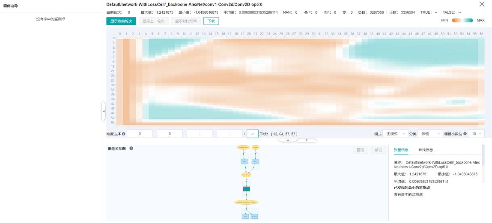
图8：查看张量热力图
如图8所示，张量检查视图将张量值展示在UI的中上位置，默认显示热力图，可以显示当前数值的分布情况。鼠标移动到图上某一个位置时，会显示当前坐标的具体值。在热力图下方的模式下拉框选择表格模式，即以表格的形式展示张量值，如图9所示。
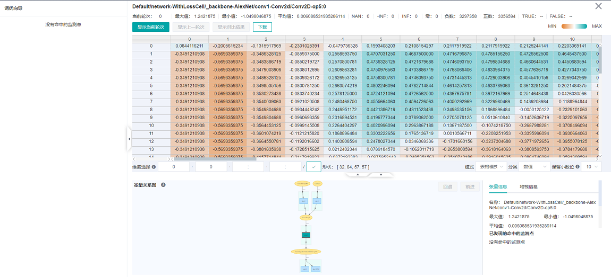
图9：查看张量值
在张量检查视图，用户可以进行维度选择，点击显示当前step，显示上一step和显示对比结果对张量进行显示和对比（当前仅支持参数节点与上一轮次对比）。此外，用户可以设置切片进行维度选择来显示相应维度的张量。
视图的最上方展示了节点信息、当前轮次以及统计信息；视图的左侧展示了调优向导，当监测点命中时，将显示命中信息和相关的调优建议；视图的下方展示了张量关系图以及详细的节点信息。
通过张量关系图，可以分析当前张量是通过哪些张量计算出来的，还可以分析当前张量影响到了哪些常量。张量图中标注了命中监测点的条件的缩写，方便用户快速识别张量问题的传播路径。每个条件的缩写可以在“设置监测点”一节中查到。
张量检查视图也提供了下载功能，用户可以将需要的张量下载，进行深入的处理分析。
使用调试器进行调试
在调试器环境准备完成后，打开调试器界面，如下图所示：
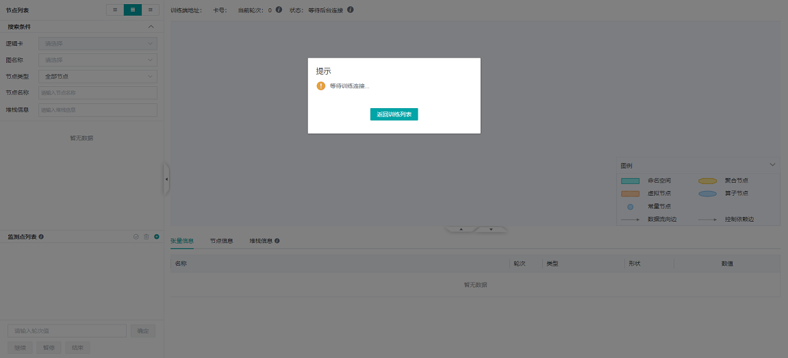
图10：调试器等待训练连接
此时，调试器处于等待训练启动和连接的状态。
在终端运行训练脚本。
稍等片刻，在MindSpore Insight UI上可以看到弹窗，提示选择是否使用推荐监测点，如下图所示：
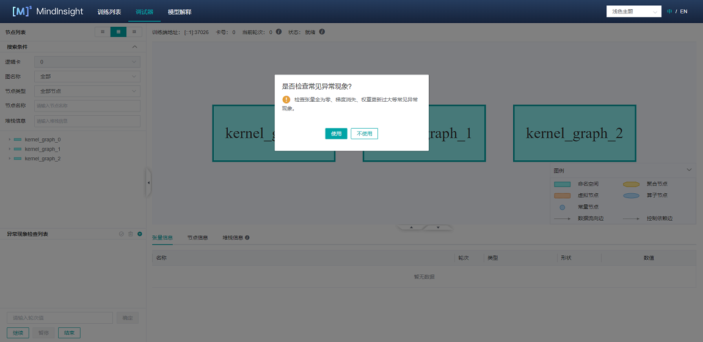
图11：等待用户选择是否使用推荐监测点
稍后可以看到计算图显示在调试器界面，见图1。
设置监测点，见图4。
按图4所示，选中检测条件，并按图3添加或取消部分节点，调试器将监控这些节点在计算过程中是否存在满足监控条件的输出。 设置完监测点后，可以在控制面板设置轮次并点击
确定向前训练指定轮次，或者直接点击继续继续训练。监测点触发，见图5。
监测点触发后，用户查看对应的节点信息和堆栈信息，通过张量检查视图找出异常原因，或者下载张量以后再通过离线分析来找出异常原因，修改脚本，修复问题。
注意事项
场景支持：
调试器暂不支持分布式训练场景。
调试器暂不支持推断场景。
调试器暂不支持单机多卡/集群场景。
调试器暂不支持连接多个训练进程。
调试器暂不支持CPU场景。
调试器暂不支持PyNative模式。
调试器暂不支持多网络场景。
性能影响：
使用调试器时，会对训练性能产生一定影响。
设置的监测点数目过多时，可能会出现系统内存不足（Out-of-Memory）的异常。
GPU场景：
在GPU场景下，只有满足条件的参数节点可以与自身的上一轮次结果作对比：使用
下一个节点执行过的节点、使用运行到该节点时选中的节点、作为监测点输入的参数节点。其他情况均无法使用上一轮次对比功能。
使用调试器时要保证MindSpore Insight和MindSpore的版本号相同。
重新检查只检查当前有张量值的监测点。
检查计算过程溢出需要用户开启异步Dump的全部溢出检测功能，开启方式请参照异步Dump。
调试器展示的图是优化后的最终执行图。调用的算子可能已经与其它算子融合，或者在优化后改变了名称。
开启调试器会关闭内存复用，在训练网络过大时有可能导致’out of memory’错误。